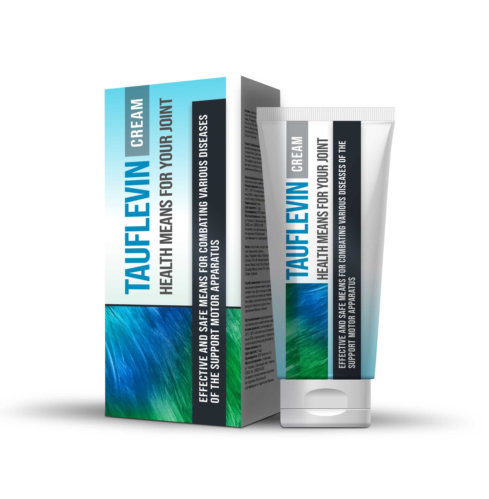

Вылечить больные суставы средством
ЗА 129 ГРИВЕН и не стать инвалидом после
40 лет - это легко и просто.

Артрит, артроз, остеохондроз и иные болезни суставов неминуемо ведут к инвалидности или раку костного мозга. 76% пациентов с больными суставами умирает в промежутке между 40 и 50 годами.
Аронова С.М.: "Я лично проконтролирую, чтобы каждый человек, оформивший заявку на препарат для лечения суставов, обязательно получил его за 129 гривен."

Аронова Светлана Михайловна
Врач, доктор медицинских наук, профессор. Основатель Современной кинезитерапии — альтернативного (неврологии и ортопедии) метода лечения хронических заболеваний и травм опорно-двигательного аппарата, ориентир в котором ставится на внутренние резервы организма и понимание больным собственного тела.
Лечебная практика: более 30 лет
«Запомните простую истину, и никого не слушайте: болезни суставов и спины (артрит, артроз, остеохондроз и др.) поддаются лечению всегда, даже в самой глубокой старости»
Стартовала программа МОЗ в рамках которой каждый человек может получить препарат для лечения суставов всего за 129 гривен!
Два месяца назад в Украине стартовала программа "Здоровые суставы". Мы получили массу вопросов, которые касаются её реализации и сегодня публикуем интервью с координатором программы Светланой Ароновой. Известный профессор возглавила программу и лично контролирует её работу, чтобы избежать коррупционных моментов. Напомним, что программа была официально запущена лишь в 2018 году. Согласно Указа №5776 МОЗ Украины, в рамках программы, каждый нуждающийся может получить новейший препарат для лечения болезней суставов за 49 гривен.
Корреспондент: "Здравствуйте, Светлана Михайловна. почему возникла необходимость запуска программы, финансируемой из бюджета? Обычные клиники и больницы уже не справляются с лечением суставов?"
Аронова С.М.: Доброго дня, Дмитрий. Дело в том, что система здравоохранения весьма забюрократизирована. Это большой неповоротливый механизм, который работает с большим скрипом. Безусловно, в клиниках и больницах лечат больные суставы. Но устаревшими и зачастую опасными методами. Как вы сами знаете, я сама занимаюсь лечением людей и прекрасно знакома со всеми новыми наработками. И давно являюсь противником "старой школы" лечения, когда у больного стараются снять симптомы и облегчить его текущее состояние, но никаким образом не лечат саму болезнь. Что в итоге приводит к дальнейшему регрессу суставов и тяжелейшим осложнениям, вплоть до рака. Тем не менее в больницах и клиниках до сих пор используется именно этот подход. Какие-то новые варианты лечения приживаются с очень большим трудом.
Именно поэтому, когда стало понятно, что в Украине разработано новое лекарство, способное эффективно справляться с заболеваниями суставов, было принято решение о запуске специальной программы. Логика тут очень проста - вместо попытки внедрить лекарство в сложную и неповоротливую систему здравоохранения, мы создаем крайне эффективный механизм доставки препарата больным людям в любую точку страны. Если бы новое средство для лечения суставов распространялось через клиники, то я думаю прошло бы ещё 2-3 года, прежде чем оно дошло бы до людей. А с таким подходом мы начали распространять его уже в 2018 году, сразу после появления указа МОЗ.
Корреспондент: "Я заметил, вы сказали, что заболевания суставов могут приводить к осложнениям, вплоть до рака. Насколько часто это бывает?"
Аронова С.М.: Давайте посмотрим, к каким осложнениям могут приводить заболевания суставов. Если взять самые распространенные заболевания суставов, то это:
| Заболевание | Осложнения на ранней стадии | Осложнения в развитой стадии |
|---|---|---|
| Артрит | Некроз хрящевой ткани, разрушение сустава, синовит | Полное разрушение сустава, сепсис, раковая опухоль сустава |
| Артроз | Воспаление хряща, изменения структуры и деградация сустава, есть риск заражения крови | Инвалидность (отказ сустава), уничтожения хрящевой ткани, раковая опухоль сустава |
| Остеохондроз | Межпозвонковые протрузии, смещение межпозвоночных дисков, защемление нервов | Грыжи позвоночника, нарушения работы ЦНС (центральной нервной системы), есть риск отказа отдельных органов, раковые опухоли позвоночника |
| Коксартроз | Костные разрастания, дегенеративные изменения хряща и сустава, дистрофические изменения суставных сумок | Ограничение двигательной активности (инвалидность 1 или 2 группы), раковые опухоли |
| Остеопороз | Отмирание соединительных тканей, некроз костной ткани (повышает хрупкость костей) | Деформация отдельных костей и скелета в целом, отказ конечностей, есть риск развития рака из-за некроза костной ткани |
| Бурсит | Воспаление околосуставной синовиальной сумки, скопление гнойного экссудата | Заражение крови, отказ сустава, гниение тканей мышц, злокачественные опухоли |
| Подагра | Воспаление сустава стопы, отложение солей, концентрация в костных тканях мочевых кристаллов | Формирование косточки на ноге и ее разрастание, изменение размера сустава, некроз костных тканей стопы, появление доброкачественных опухолей |
Как видите, болезни суставов на самом деле крайне часто приводят к тяжелым осложнениям, которые чреваты инвалидностью или смертью больного. Последние 100 лет нагрузка на скелет человека непрерывно росла. В итоге, сейчас практически у каждого человека 25 лет имеется как минимум 1-2 пораженных сустава. К 35-40 годам, болезни уже давно переходят в стадию, на которой возможно развитие тяжелых осложнений. Для наглядной иллюстрации, можно посмотреть на вот эти фотографии, сделанные в больницах:

Это руки 42-летней женщины, которая стала инвалидом из-за артроза.

Раковая опухоль коленного сустава, возникшая из-за артрита коленного сустава.

Пациент после операции на колене по имплантации искусственного сустава.
Корреспондент: "Давайте вернёмся к позитиву. Каким образом можно вылечить заболевания суставов?"
Аронова С.М.: Всё достаточно просто. Единственное, что действительно необходимо и чего не могут обеспечить старые лекарства - это полноценное кровоснабжение пораженного сустава. Требуется просто обеспечить восстановление кровоснабжения, чтобы остановить некроз и воспаление, одновременно запустив процесс регенерации. Проблема в том, что звучит это легко, но на практике реализовать это не получалось ранее ни одного из существующих вариантов лечения.
Перед тем, как препарат был выбран для распространения в рамках программы, проводились масштабные клинические испытания. Суммарно 10 120 человек из разных возрастных групп и с различными заболеваниями суставов приняли в них участие. 93.8% полностью вылечили свои заболевания. У 5.6% остались некоторые проблемы, но в целом их состояние улучшилось в разы. Грубо говоря, если у кого-то была тяжелая форма артрита и он еле ходил, то после прохождения курса у него остались только периодические лёгкие боли в суставе. И только у 0.6 улучшение состояние было хотя и существенным, но недостаточным, чтобы отнести их к полностью выздоровевшим.
Корреспондент: "Можете уточнить, что это за препарат?"
Аронова С.М.: Я говорю о специальном комплексе "TAUFLEVIN". Это препарат, который позволяет в кратчайшие сроки, буквально от 4-х дней, забыть о болях в спине и суставах, и в течение пары месяцев вылечить даже очень сложные случаи.
Он производится только в Украине и его разработка заняла около 2 лет, с бюджетом в 78 миллионов долларов. А на программу было выделено 54 миллиона гривен. Именно поэтому мы имеем возможность распространять"TAUFLEVIN" за 129 гривен, при его полной стоимости 1 980 гривен за упаковку.

Корреспондент: "Можете рассказать как действует этот чудо-комплекс?"
Аронова С.М.: Как раз здесь никакого чуда нет, сухая наука. Основным ингредиентом препарата является хондроитин: то самое вещество, которое обеспечивает активный рост костных тканей. Вы можете себе представить биологическую силу подобного механизма? Ничего более эффективного для активизации кровообращения в костях и суставах в природе пока не существует. Плюс глюкозамин и МСМ (метилсульфонилметан), которые вносят свою ощутимую лепту в эффективность препарата.
Даже за один приём вы активируете около 930 000 клеток, которые служат пользой вашему кровотоку. Так и происходит лечение. Здесь главное стабильность
Корреспондент: "Звучит впечатляюще. Только объясните нам, что это значит для простых людей с заболеваниями суставов?"
Аронова С.М.: Это значит, что современная украинская медицина уходит корнями в прошлое, и вы сможете вылечить свои заболевания в домашних условиях за один-два месяца. TAUFLEVIN не замораживает, не обезболивает, он "перезапускает" организм на клеточном уровне. Он устраняет причину самих болей и возвращает суставы, позвоночник в первоначальное, нормальное состояние. Больной не просто избавляется от симптомов, а удаляет корень болезни - ослабленное медленными, старыми клетками, кровоснабжение хрящей.
В первый же день TAUFLEVIN запускает системы регенерации организма. Ну и купирует болевой синдром, это вы сразу ощутите. Уже через две-три недели лечение будет завершено, и, главное — не допустить повторного появления болей, оперативно повторив курс.
Корреспондент: "TAUFLEVIN помогает только при каких-то определенных заболеваниях суставов?"
Аронова С.М.: Нет, я же вам говорю: он воздействует на клеточном уровне, восстанавливая кровоснабжение. Он лечит любое заболевание, связанное с суставами и позвоночником: артроз и артрит, ишиас, ревматизм, подагра и остеопороз, радикулит и остеохондроз, смещения позвоночных дисков. Вывихи, ушибы, синяки, переломы, да хоть натоптыши - комплекс чрезвычайно эффективен.
Корреспондент: "И что, он и правда именно избавляет от всех этих болезней, а не просто устраняет боль?"
Аронова С.М.: TAUFLEVIN и устраняет боль в суставах (на начальных этапах лечения), и полностью ликвидирует заболевание. Безусловно есть и другие варианты лечения болезней, но как правило все они сопряжены с хирургическим вмешательством и весьма опасны для человека. Не говоря уже о том, что стоимость операции на том же коленном суставе сейчас просто зашкаливает и по карману весьма небольшому количеству людей.

Настоящий сертификат
Корреспондент: "Каким образом люди могут получить TAUFLEVIN по программе МОЗ? Это может сделать любой человек?"
Аронова С.М.: Да, абсолютно любой. Есть только одно "но" - ввиду малых объёмов производства программа действует поэтапно. Сегодня любой желающий может оставить заявку и получить "TAUFLEVIN" всего за 129 гривен. Всё, что требуется - оставить своё имя и номер телефона по которому с вами смогут связаться сотрудники консультационного центра программы.
Корреспондент: "Какой период времени программа будет действовать?"
Аронова С.М.: Срок окончания программы - (включительно). Именно до этой даты необходимо оставить заявку на "TAUFLEVIN". Если вы ещё этого не сделали - советую поторопиться, так как потом программа переключится на другой регион и получить "TAUFLEVIN" за 129 гривен будет уже невозможно. Я лично гарантирую, что все заявки оставленные до этого времени будут обработаны и люди получат препарат.
Хочу обратить ваше внимание на опрос, проведенный при поддержке МОЗ Украины. В качестве выборки использовались люди стоящие на учете в поликлиниках с заболеваниями суставов различной тяжести.
Опрос МОЗ Украины: как вы избавились от проблем с суставами?
23%
47%
8%
17%
5%
Светлана Михайловна, спасибо вам за интервью! Может быть вы хотите что-то сказать нашим читателям перед тем, как мы попрощаемся?"
Аронова С.М.: Да, конечно. Я хочу обратить внимание читателей, что заболевания спины и суставов «молодеют», и даже слабые периодичные боли — повод обратить внимание на проблему. Врач не будет уговаривать вас лечиться. Как говорится, спасение утопающих - дело рук самих утопающих.
И помните: заболевания, возникающие из-за болей в спине и суставах, не просто приносят дискомфорт. Они укорачивают жизнь на 15-20 лет.

Опасайтесь подделок! Оригинальный комплекс TAUFLEVIN по программе МОЗ Украины можно приобрести только на ОФИЦИАЛЬНОМ САЙТЕ.
Напоминаем, что программа действует лишь до включительно.
Понравилась статья? Поделитесь с друзьями!


Я вам так признательна за информацию про это средство. Давно искала себе что–то подобное. Жду с нетерпением посылки! Спасибо!

Был остеохондроз. был и сплыл...за 10 дней ушло все! Спасибо за это!

Не может быть! Сначала не могла поверить что и правда 129 гривен стоит. Уже заказала, как придет отпишусь о результатах. Спасибо огромное производителю!

Светлана Михайловна, спасибо вам! Попробовал, стало действительно легче. Посмотрим, что да как через неделю. Пока рано говорить, позже отпишусь. Но радикулита уже нет, даже не чувствую его. Так что думаю, все будет хорошо!

Андрей, не переживайте и продолжайте принимать TAUFLEVIN.
Главное следуйте указаниям инструкции по применению препарата.
С уваженим, Светлана.

Народ, помогите! Устал уже от артрита. Дискомфорт и боли не дают жизни. Уже просто не знаю, что делать. Принимаю разные средства периодически, но они не помогают:(

Андрей, бери TAUFLEVIN, не пожалеешь. У самого проблемы были, из-за радикулита делать не мог ничего, становился овощем понемногу, уже руки опустились. Спасибо матери что нашла TAUFLEVIN и заставила его принимать. Кстати, покупали полгода назад, без всякой программы (и цена была у него приличная, почти 2 тысячи за упаковку) Зато теперь болей в спине вообще нет и двигаюсь спокойно. Поверь, возьми, и все наладится вот увидишь, тем более пока 129 гривен стоит

Как получить TAUFLEVIN?

Наталия, вот вам ссылка на TAUFLEVIN, только поторопитесь, пока идет программа. Кстати, мне он отлично помог.
Ян, да, спасибо тебе, уже заказала
а можешь сказать сколько примерно доставка будет идти?
Наталия, примерно за 2 дня придет)

Просто невероятный комплекс, всем советую, так достали боли в области шее, подозреваю что это был остеохондроз. Но после того как принимала TAUFLEVIN на протяжении 10 дней стало намного легче и боли в шее ушли.

Маша, неужели результат настолько эффективный? Наверно стоит и себе заказать.

Расскажу и свою историю, был у меня аналогичный случай. Тоже остеохондроз в области шейных позвонков. Так бывало прихватывало что чуть ли не выворачивало на изнанку от боли. Начал искать способы борьбы с этой проблемой. Тут попал на статью, решил заказать TAUFLEVIN - была не была. Жаль программы тогда не было, ну да ладно. Посылка пришла в течении 2 дней, начал принимать. И как же хорошо что я его приобрел - 14 дней и болей в шее как небывало. Берите, народ, не пожалеете.

Вижу не только у меня такие проблемы, но слава богу что мне попался месяц назад на глаза TAUFLEVIN, избавил меня от артроза коленей, так быстро как не смогли сделать десятки лекарств и препаратов

Скажите народ, оно поможет? А то от препаратов и врачей никакого толку

Александр, да, несомненно. Эффект у комплекса очень сильный и самое главное что даже здоровью не вредит. Так что торопись заказывать! TAUFLEVIN мне полностью помог избавиться от радикулита.

Спасибо, комплекс TAUFLEVIN очень быстро помог! Заказывала за 129 гривен именно на официальном сайте производителя! Не затягивайте с лечением, лучше избавится от этих проблем с суставами сейчас, чем потом слечь и понять что больше никогда не сможешь двигаться.

Спасибо, Светлана Михайловна. Если бы не вы, то я бы не поверила в эффективность комплекса! Я больше 5 лет прожила с мужем у которого поясничный остеохондроз. После того как давала ему по капсуле 2 раза в день, остеохондроз вообще пропал! Самое интересное, он даже не заметил как перестал чувствовать боли в пояснице!
И посылка пришла очень быстро.
Ксения, не стоит благодарности. Вы лучше скажите, пожалуйста,
сколько у вас заняло лечение по срокам?
С уваженим, Светлана.
Светлана, примерно 15 дней, после 20 дней я вообще перестала замечать что бы его прихватывал остеохондроз.
Ксения, поняла, спасибо.
С уваженим, Светлана.

Результат просто превзошел мои ожидания. Весь артрит на пальцах рук исчез за 6 дней! Заказала ещё несколько упаковок своим подругам.

Сегодня, буквально вот только что поучаствовала в программе..
Там серьезно сейчас акция, за 129 гривен можно получить!
На официальном
сайте
заказывала, очень быстро перезвонили и заказ подтвердили.
Хочется наконец-то ходить без болей в спине, и наслаждаться
пешими прогулками)

Случайно набрела на эту статью. И что я вижу!! Рассказывают о моем комплексе. Ну не в смысле мой, а в том плане, что я мужу его покупала. Он не знает, что я здесь пишу, но все-таки поделюсь. Это ж и моя радость, скорее даже полностью мое счастье! Короче, я вот тоже читала отзывы, смотрела как и что и заказала TAUFLEVIN. А то мой муж уже весь отчаялся. И на массаж ходил, и таблетки пил, решали че дальше делать. А тут в общем начали принимать TAUFLEVIN и теперь ура! Никаких проблем у любимого, он снова в семье, снова бодр, активен!

У нашего знакомого в частной аптеке этот препарат продается за 3 тысячи, поэтому не решалась купить, денег было жалко. А здесь увидела что 129 гривен стоит и сразу заказала потому что заплатить столько позволяет пенсия. Боли в спине становятся слабее с каждым днем, а вроде обычный комплекс.
Алёна, все-таки аптеки тоже пытаются им торговать. Кощунство так
наживаться на людях. Теперь мы будем отслеживать: куда и кому
отправляем продукт.
С уваженим, Светлана.

Принимаю TAUFLEVIN уже полгода. Вылечила сколиоз за каких-то две с половиной недели, а теперь постоянно держу в аптечке, на всякий случай.

Несколько десятков лет пытался вылечить запущенный радикулит и все зря. Решил попробовать TAUFLEVIN, о котором здесь рассказывал профессор, спина прошла за 2 недели. Теперь бегаю как молодой. И спрашивается, где же он был раньше?
Макс, тут, увы, ничего не поделаешь. Чтобы разработать препарат
ушла масса времени, было вложено много денежных средств. Зато,
спустя столько времени, люди могут быстро избавиться от проблем
с суставами.
С уваженим, Светлана.

Прочитала статью и сразу решила заказать, чтобы попробовать. Дело в том, что обычные лекарства мне помогали ненадолго — остеохондроз, как мне говорили, сложно вылечить. Теперь отписываюсь о результатах. TAUFLEVIN пришел очень быстро. Уже в первый день чувствую такое облегчение, что просто не могла не написать здесь об этом. Спасибо большое, теперь хоть смогу нормально жить!

Люди, скажите где вы заказывали? В аптеках такое средство не продается, а в интернете покупать страшно. Не хотелось бы попасть на подделку, а то как я понимаю никакого толку не будет.
Ещё раз повторяю, что комплекс TAUFLEVIN можно заказать ТОЛЬКО
на
официальном сайте, чтобы не ошибиться, просто нажмите на ссылку чуть выше!
Специально, в рамках программы, действует возможность получить
препарат за 129 гривен, но она будет действовать совсем недолго,
так что поторопитесь с заказом!
И остерегайтесь, пожалуйста, подделок.
С уваженим, Светлана.

TAUFLEVIN - отличное средство, благодаря ему я избавилась от проблем с суставами, еще никакие препараты не могли меня избавить от от проблем с суставами как это сделал TAUFLEVIN. Плюс еще на препарат скидка идет. Люди заказывайте, пока еще есть в наличии.


Начата проверка по факту злоупотреблений в системе здравоохранения.

Г.Лаврова: "Как новый директор аптечной сети 36.6, я обещаю что мы будем работать честно."

Больному артритом пришлось ампутировать ногу.

100 244 человека потеряли пальцы из-за больных суставов.

В чём сложность операций на коленном суставе?